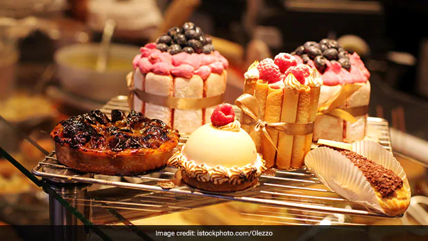
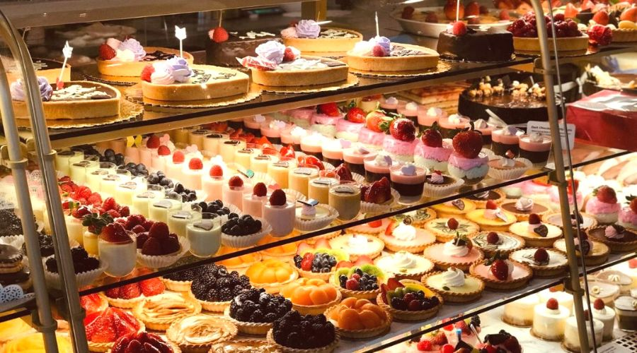

A bakery is an establishment that produces and sells flour-based baked goods made in an oven such as bread, cookies, cakes, doughnuts,
bagels, pastries, and pies.[1] Some retail bakeries are also categorized as cafés, serving coffee and tea to customers who wish to consume
the baked goods on the premises. In some countries, a distinction is made between bakeries, which primarily sell breads, and pâtisseries,
which primarily sell sweet baked goods.ome bakeries provide services for special occasions (such as weddings, anniversaries,
birthday parties, business networking events, etc.) or customized baked products for people who have allergies or sensitivities to certain foods
(such as nuts, peanuts, dairy or gluten, etc.). Bakeries can provide a wide range of cake designs such as sheet cakes, layer cakes,
wedding cakes, tiered cakes, etc. Other bakeries may specialize in traditional or hand-made types of baked products made with locally milled flour,
without flour bleaching agents or flour treatment agents, baking what is sometimes referred to as artisan bread.
Bread ,Bread roll Flatbreads Bagels Donuts Muffins Pizzas Buns Pastries Pasties.